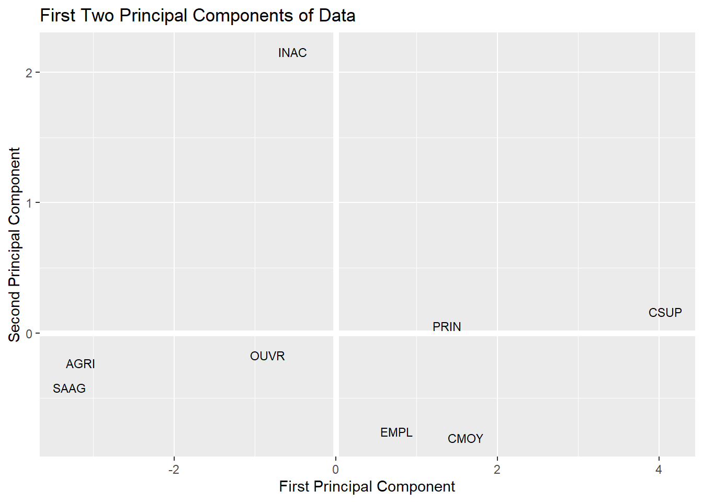
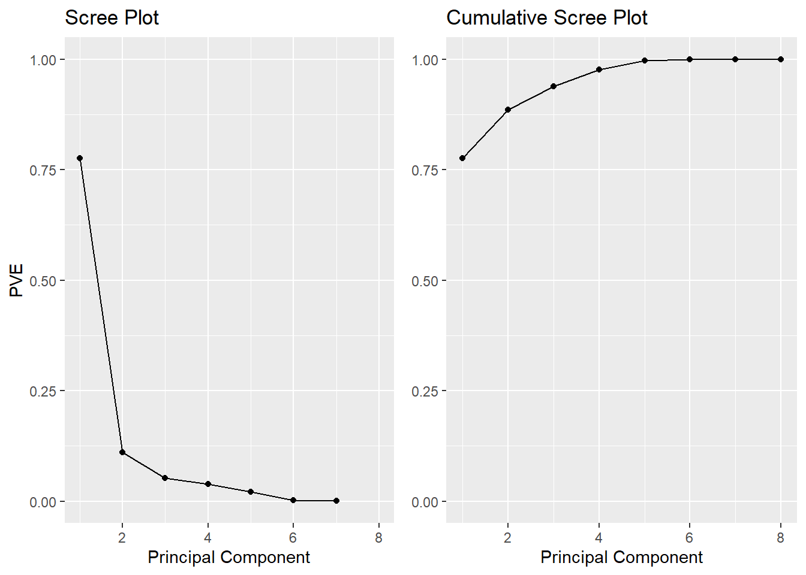

Principal Component Analysis (PCA) involves the process by which principal components are computed, and their role in understanding the data. PCA is an unsupervised approach, which means that it is performed on a set of variables \(X_1\), \(X_2\), …, \(X_p\) with no associated response \(Y\). PCA reduces the dimensionality of the data set, allowing most of the variability to be explained using fewer variables. PCA is commonly used as one step in a series of analyses. You can use PCA to reduce the number of variables and avoid multicollinearity, or when you have too many predictors relative to the number of observations.
The goal of PCA is to explain most of the variability in the data with a smaller number of variables than the original data set. For a large data set with \(p\) variables, we could examine pairwise plots of each variable against every other variable, but even for moderate \(p\), the number of these plots becomes excessive and not useful. For example, when \(p = 10\) there are \(p(p-1)/2 = 45\) scatterplots that could be analyzed! Clearly, a better method is required to visualize the n observations when p is large. In particular, we would like to find a low-dimensional representation of the data that captures as much of the information as possible. For instance, if we can obtain a two-dimensional representation of the data that captures most of the information, then we can plot the observations in this low-dimensional space.
PCA provides a tool to do just this. It finds a low-dimensional representation of a data set that contains as much of the variation as possible. The idea is that each of the n observations lives in p-dimensional space, but not all of these dimensions are equally interesting. PCA seeks a small number of dimensions that are as interesting as possible, where the concept of interesting is measured by the amount that the observations vary along each dimension. Each of the dimensions found by PCA is a linear combination of the p features and we can take these linear combinations of the measurements and reduce the number of plots necessary for visual analysis while retaining most of the information present in the data.
We now explain the manner in which these dimensions, or principal components, are found.
The first principal component of a data set \(X_1, X_2, ..., X_p\) is the linear combination of the features
\[Z_{1} = \phi_{11}X_{1} + \phi_{21}X_{2} + ... + \phi_{p1}X_{p} \tag{1}\]
that has the largest variance and where \(\phi_1\) is the first principal component loading vector, with elements \(\phi_{12}, \phi_{22}, \dots, \phi_{p2}\). The \(\phi\) are normalized, which means that \(\sum_{j=1}^{p}{\phi_{j1}^{2}} = 1\). After the first principal component \(Z_1\) of the features has been determined, we can find the second principal component \(Z_2\). The second principal component is the linear combination of \(X_1,\dots , X_p\) that has maximal variance out of all linear combinations that are uncorrelated with \(Z_1\). The second principal component scores \[z_{12}, z_{22}, \dots, z_{n2}\] take the form
\[Z_{2} = \phi_{12}X_{1} + \phi_{22}X_{2} + ... + \phi_{p2}X_{p} \tag{2}\]
This proceeds until all principal components are computed. The elements \(\phi_{11}, ..., \phi_{p1}\) in Eq. 1 are the loadings of the first principal component. To calculate these loadings, we must find the \(\phi\) vector that maximizes the variance. It can be shown using techniques from linear algebra that the eigenvector corresponding to the largest eigenvalue of the covariance matrix is the set of loadings that explains the greatest proportion of the variability.
Therefore, to calculate principal components, we start by using the cov() function to calculate the covariance matrix, followed by the eigen command to calculate the eigenvalues of the matrix. eigen produces an object that contains both the ordered eigenvalues (values) and the corresponding eigenvector matrix (vectors).
It is usually beneficial for each variable to be centered at zero for PCA, due to the fact that it makes comparing each principal component to the mean straightforward. This also eliminates potential problems with the scale of each variable.
data=read.table("http://hamrita.e-monsite.com/medias/files/datatd1.txt",h=T)
# centering data
data_c=apply(data, 2, scale)Then, we calculate the eigen values and eigen vectors of the covariance matrix of scaled data
data=read.table("http://hamrita.e-monsite.com/medias/files/datatd1.txt",h=T)
# calculate the covariance matrix
cov_mat=cov(data_c)
cov_mat PAO PAA VIO VIA POT LEC RAI
PAO 1.0000000 -0.7736643 0.9261878 -0.9057929 0.6563525 0.8885594 -0.8334273
PAA -0.7736643 1.0000000 -0.6040133 0.9044415 -0.3328879 -0.6733710 0.9588178
VIO 0.9261878 -0.6040133 1.0000000 -0.7501607 0.5170754 0.7917256 -0.6690062
VIA -0.9057929 0.9044415 -0.7501607 1.0000000 -0.4185661 -0.8386021 0.9239285
POT 0.6563525 -0.3328879 0.5170754 -0.4185661 1.0000000 0.6029189 -0.4099317
LEC 0.8885594 -0.6733710 0.7917256 -0.8386021 0.6029189 1.0000000 -0.8244519
RAI -0.8334273 0.9588178 -0.6690062 0.9239285 -0.4099317 -0.8244519 1.0000000
PLP -0.8558457 0.7712209 -0.8279862 0.7197908 -0.5539561 -0.7509231 0.8344475
PLP
PAO -0.8558457
PAA 0.7712209
VIO -0.8279862
VIA 0.7197908
POT -0.5539561
LEC -0.7509231
RAI 0.8344475
PLP 1.0000000# eigen values and vectors
eig=eigen(cov_mat)
# eigen values
eig$values[1] 6.207947e+00 8.796814e-01 4.159611e-01 3.064547e-01 1.684415e-01
[6] 1.806771e-02 3.446769e-03 -7.882727e-17# eigen vectors
eig$vectors [,1] [,2] [,3] [,4] [,5] [,6]
[1,] 0.3913106 -0.13782295 0.16171408 0.11934962 -0.2940454 0.39774771
[2,] -0.3486743 -0.44058521 0.31994973 0.21790900 0.2654417 0.52070420
[3,] 0.3491929 -0.20168213 0.68063176 -0.02888337 -0.2457165 -0.46475199
[4,] -0.3736251 -0.26030922 0.07348235 -0.39654491 0.3456048 -0.42286619
[5,] 0.2463714 -0.74382646 -0.55765980 -0.07399153 -0.1757252 -0.10774663
[6,] 0.3648220 -0.12802133 0.03240104 0.51888931 0.6691919 -0.18494157
[7,] -0.3730515 -0.32597990 0.25424981 0.06370633 -0.2715323 0.01626466
[8,] -0.3616760 0.05022725 -0.16169177 0.70810300 -0.3329142 -0.36024492
[,7] [,8]
[1,] -0.10692002 0.72896315
[2,] 0.42307943 -0.11777262
[3,] 0.25392333 -0.18012990
[4,] 0.03334541 0.57500037
[5,] 0.09342846 -0.13544943
[6,] -0.31310737 0.01273521
[7,] -0.76590350 -0.15895192
[8,] 0.22496593 0.21885081For our example, we’ll take the first two sets of loadings and store them in the matrix phi
(phi=eig$vectors[,1:2]) [,1] [,2]
[1,] 0.3913106 -0.13782295
[2,] -0.3486743 -0.44058521
[3,] 0.3491929 -0.20168213
[4,] -0.3736251 -0.26030922
[5,] 0.2463714 -0.74382646
[6,] 0.3648220 -0.12802133
[7,] -0.3730515 -0.32597990
[8,] -0.3616760 0.05022725Eigenvectors that are calculated in any software package are unique up to a sign flip. By default, eigenvectors in R point in the negative direction. For this example, we’d prefer the eigenvectors point in the positive direction because it leads to more logical interpretation of graphical results as we’ll see shortly. To use the positive-pointing vector, we multiply the default loadings by \(-1\). The set of loadings for the first principal component (PC1) and second principal component (PC2) are shown below:
phi=-phi
colnames(phi)=c("PC1", "PC2")
phi PC1 PC2
[1,] -0.3913106 0.13782295
[2,] 0.3486743 0.44058521
[3,] -0.3491929 0.20168213
[4,] 0.3736251 0.26030922
[5,] -0.2463714 0.74382646
[6,] -0.3648220 0.12802133
[7,] 0.3730515 0.32597990
[8,] 0.3616760 -0.05022725Each principal component vector defines a direction in feature space. Because eigenvectors are orthogonal to every other eigenvector, loadings and, therefore, principal components are uncorrelated with one another, and form a basis of the new space. This holds true no matter how many dimensions are being used.
If we project the n data points \(x_1, ..., x_n\) onto the first eigenvector, the projected values are called the principal component scores for each observation.
# Calculate Principal Components scores
PC1 <- as.matrix(data_c) %*% phi[,1]
PC2 <- as.matrix(data_c) %*% phi[,2]
# Create data frame with Principal Components scores
PC <- data.frame(grad = row.names(data), PC1, PC2)
PC grad PC1 PC2
1 AGRI -3.1538232 -0.22993989
2 SAAG -3.2942597 -0.41850307
3 PRIN 1.3769588 0.05473497
4 CSUP 4.0772714 0.16473285
5 CMOY 1.6071145 -0.80132031
6 EMPL 0.7544441 -0.75630756
7 OUVR -0.8410311 -0.17121742
8 INAC -0.5266749 2.15782043Now that we’ve calculated the first and second principal components.
# Plot Principal Components for each State
library(ggplot2)
ggplot(PC, aes(PC1, PC2)) +
modelr::geom_ref_line(h = 0) +
modelr::geom_ref_line(v = 0) +
geom_text(aes(label = grad), size = 3) +
xlab("First Principal Component") +
ylab("Second Principal Component") +
ggtitle("First Two Principal Components of Data")
Because PCA is unsupervised, this analysis on its own is not making predictions, but simply making connections between observations using fewer measurements.
Note that in the above analysis we only looked at two of the four principal components. How did we know to use two principal components? And how well is the data explained by these two principal components compared to using the full data set?
We mentioned previously that PCA reduces the dimensionality while explaining most of the variability, but there is a more technical method for measuring exactly what percentage of the variance was retained in these principal components.
By performing some algebra, the proportion of variance explained (PVE) by the mth principal component is calculated using the equation:
\[PVE = \frac{\sum^n_{i=1}(\sum^p_{j=1}\phi_{jm}x_{ij})^2}{\sum^p_{j=1}\sum^n_{i=1}x^2_{ij}} \tag{3}\]
It can be shown that the PVE of the mth principal component can be more simply calculated by taking the mth eigenvalue and dividing it by the number of principal components, p. A vector of PVE for each principal component is calculated:
PVE <- eig$values / sum(eig$values)
round(PVE, 2)[1] 0.78 0.11 0.05 0.04 0.02 0.00 0.00 0.00The first principal component in our example therefore explains 78% of the variability, and the second principal component explains 11%. Together, the first two principal components explain 89% of the variability.
It is often advantageous to plot the PVE and cumulative PVE, for reasons explained in the following section of this tutorial. The plot of each is shown below:
# PVE (aka scree) plot
library(ggplot2); library(gridExtra)
PVEplot <- qplot(c(1:8), PVE) +
geom_line() +
xlab("Principal Component") +
ylab("PVE") +
ggtitle("Scree Plot") +
ylim(0, 1)
# Cumulative PVE plot
cumPVE <- qplot(c(1:8), cumsum(PVE)) +
geom_line() +
xlab("Principal Component") +
ylab(NULL) +
ggtitle("Cumulative Scree Plot") +
ylim(0,1)
grid.arrange(PVEplot, cumPVE, ncol = 2)Warning: Removed 1 rows containing missing values (geom_point).Warning: Removed 1 row(s) containing missing values (geom_path).